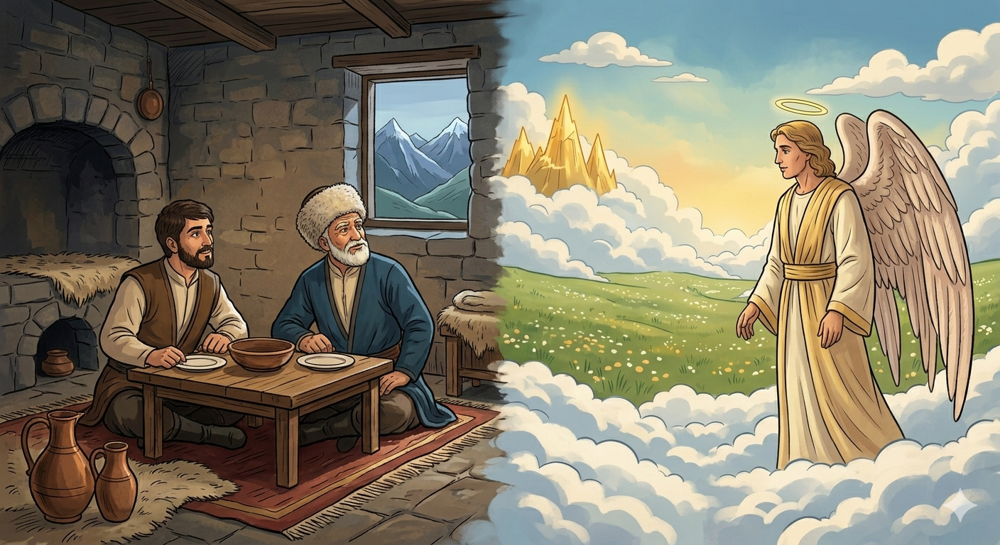

И.А. Дахкильгов. Хьехаме дувцарш - поучительные рассказы-притчи.
И.А. Дахкильгов. Хьехаме дувцарш - поучительные рассказы-притчи. Из ингушского фольклора.

Хьаша веза аз лаьрхӀандаь
Цхьа къонах, Ӏа яха, дукха ламаз дара, мархӀа кхабара тӀера хиннавац. Шийна ма та-а вахаш хиннав из. Иштта хинна вале а, кхелхачул тӀехьагӀа воддашехьа ялсамала кхаьчав из. Малейко хаьттад: - Ялсамала хӀана хьожаваьв хьо? - Хьожаваьв, хьаьша веза аз лоархӀаш хиннадаь. - Мишта веза лоархӀаш хиннав Ӏа из? - Нагахьа санна, - аьннад лоамарочо, - се виза воллашехьа а, хьаьшаца шуна хайча, аз мамогга дукха хӀама дуар, хьаьшийга виззалца хӀама даийтар духьа. Ӏуйранна хьаьшал хьалхе се сомаваьлча, маьже хьоа ца еш таккхалча дӀауллар со, хьаьашага из виззалца наб ейтар духьа. Нагахьа санна… - Тоъаргда, - из къонах соцаваьв малейко, - кхы дӀахо дувца дезац. Хьожаве воагӀача тайпара ялсамала хьожаваьв хьо.
РУССКИЙ
За то, что высоко чтил гостей
Некий горец не отличался богобоязненностью: не молился и пост не держал. Жил он в свое удовольствие. Однако после смерти горец попал прямо в рай. Ангел его спросил: - За что тебя определили в рай? - За то, - ответил горец, - что я высоко чтил гостей. - А как ты их чтил? - спросил ангел. - К примеру, - поведал горец, - если я бывал и сыт, сев ужинать с гостем, вовсю ел больше него, чтобы тем самым дать ему возможность насытиться. Если же я просыпался раньше гостя, лежал тихо, не шелохнувшись, чтобы дать возможность гостю выспаться. Если… - Довольно, - прервал горца ангел, - я все понял. Тебя воистину справедливо определили в рай.
ENGLISH
НОХЧИЙН
ПОГОВОРКИ